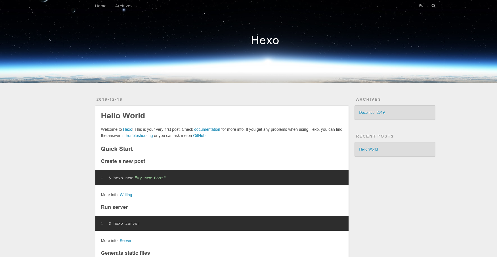
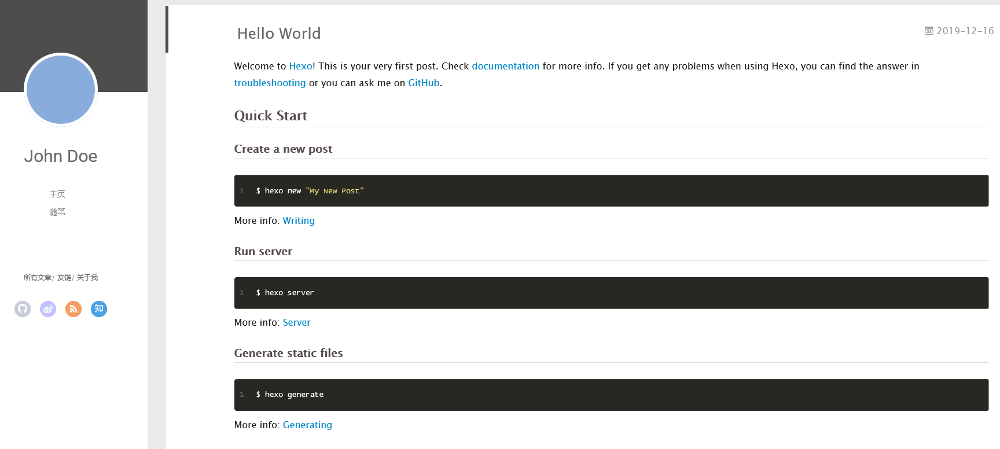

背景
2019年给自己制定的目标虽然完成了不少，但也有部分没做好或根本就没做，技术博客就是其中之一。
马上2020年了，我想了下应该将技术博客放入重点目标中，一方面可通过技术博客不断积累并落地自己的技术知识，另外一方面也可以提升自己的写作水平，没准还能结交一些志同道合的小伙伴。
这篇文档主要讲解如何搭建技术博客及一些常用操作，因为网上也有很多教程所以我直接提供跳转连接，我的重点还是做下归纳总结，方便新手入门及日常使用。
博客搭建
写技术博客的方式有很多（比如博客园、简书、知乎、掘金等），而我选择的是自己搭建一套个人博客系统，通过Hexo + Github来搭建。
搭建个人博客并不困难，主要就做2个事情：创建Github Page 和 本地安装Hexo，网上有篇教程讲的很好。
环境准备
做下备案总结，Github篇比较简单不讲了，主要梳理下搭建Hexo篇。
首先Hexo需要 git、node提供基础环境，所以需要本机安装这些软件，在cmd或PowerShell执行下面命令来确认版本。1
2git --version #查看git版本
node --version #查看node.js版本
如果上面命令有返回版本信息，则说明已经安装了，否则需要手动安装下（注意版本过低需要安装升级）。
安装git
安装node.js
安装Hexo
接下来就安装Hexo了，node下提供了npm包管理器，在powershell或git bash下执行命令
“npm默认镜像是国外的，下载速度会比较慢，可以修改为阿里的镜像。”
1 | $ npm install -g hexo-cli #npm install -g 的意思是全局安装Hexo |
安装完成后，使用hexo -v检测Hexo安装情况，有内容反馈说明成功了
搭建本地博客
初始化
接下来就是使用Hexo来搭建本地博客了，非常简单，使用powershell执行几句命令就可了。
“使用git bash也可以，只是我觉得powershell使用起来更加方便。”
1 | $ cd E:\dcoument\MyBolg #进入自己放博客的文件夹 |
接下来在浏览器中打开地址http://localhost:4000，可以访问就说明博客系统已经搭建好了。

修改主题
好了，博客已经搭建好了，但好像有点丑，哈哈。 没关系，个性化调整下。
官方提供了很多主题，我们可以通过下面命令来下载主题，注意需要在当前工作文件夹主目录下运行1
2#theme git path：https://github.com/litten/hexo-theme-yilia.git themme name:yilia
$ git clone <theme git path> themes/<theme name>
上面命令核心是通过git将别人开发好的主题下载到我们博客的themes文件夹下面。
主题下载下好了，接下来就是启用主题：在主目录下找到_config.yml文件，将theme: landscape修改为theme: yilia（修改为下载主题的名称，上面的主题名字为yilia），接下来运行再看下效果hexo s -g。
“期间如果存在一些奇怪的问题，执行
hexo clean清理下public目录，再通过hexo g生成。”

写作
博客系统搭建好就可以使用了，上面内容都是一次性的不需要刻意去记，但这边的内容是日常需要用到的，建议多熟悉并掌握使用。
先看最基础的一组命令：
1 | $ hexo new "postName" #新建文章 |
第一个命令是创建一篇文章，以Markdown格式进行编写；第二个命令是将刚编写的文档进行生成；第三个命令是开启服务，进行本地预览。
除了Markdown的标准语法，Hexo提供了额外的语法：
当然还可以先编写草稿，草稿写完后再发布到文档中，命令如下：
1 | $ hexo new draft "postName" #新建草稿文章 |
博客发布Github page
文档写完了，本地预览也觉得没什么问题，那就发布到网站上。
怎么发布？ 很简单，执行hexo d就完成了。但是前提是需要把该配置的东西配置好，比如ssh key，_config.yml的deploy，具体配置那篇教程里面将的很细致。
Hexo常用命令
初始化init命令
创建一个工作文件夹，并在此文件夹中执行hexo init命令
1 | $ cd /e/Workspaces/hexo/ #工作文件夹路径 |
也可以写成这样
1 | $ hexo init "/e/Workspaces/hexo/" |
接下来执行npm install命令，通过package.josn安装对应模块
1 | $ npm install |
Hexo命令再梳理
1 | #---常用--- |
深度优化
文档工具
写MarkDown肯定需要文档编辑器，个人推荐vscode和atom，2个随便选都很不错。
NexT主题
最近发现了一个主题非常喜欢，准备基于这个主题来做个性配置。
由于搭建NexT过程中还是遇到些问题，可能我是v7.0.1版本的，官方文档比较老了有些东西对不上，所以这边对遇到的问题做下备忘。
设置中文语言
官方提供的方案是language: zh-Hans，但是改到死都没改出来，去看了下他的语言包，里面中文的名称对应的是zh-CN.yml，所以只要将主目录下的_config.yml改成language: zh-CN即可。1
language: zh-CN #这里设置语言 简体中文
设置背景动画
设置背景动画调不出来，看了官方文档是这么说的
官方文档中背景动画可以通过编辑主题配置文件， 搜索 canvas_nest 或 three_waves，根据需求设置值为 true 或者 false 即可：
1 | canvas_nest: true //开启动画 |
可以不管我怎么配置、怎么Clean、生成、重启都不行，最后通过F12调试发现报错缺少js文件。仔细看了下主题的配置文件，可以发现这一段：1
2
3
4
5
6
7
8# Dependencies: https://github.com/theme-next/theme-next-canvas-nest
canvas_nest:
enable: true
onmobile: true # display on mobile or not
color: '0,0,255' # RGB values, use ',' to separate
opacity: 0.5 # the opacity of line: 0~1
zIndex: -1 # z-index property of the background
count: 99 # the number of lines
恍然大悟，通过Dependencies提供的github地址，按照提示下载所需要的js文件，执行指令如下：1
2$ cd themes/next
$ git clone https://github.com/theme-next/theme-next-canvas-nest source/lib/canvas-nest
终于OK了。
增加打赏功能
官方提供的方案如下：1
2
3reward_comment: 坚持原创技术分享，您的支持将鼓励我继续创作！
wechatpay: /path/to/wechat-reward-image
alipay: /path/to/alipay-reward-image
7.0.1版本上没有这一段，且配置了依旧也是无效的，解决方案是查找主题配置文件中的reward，设置为启用1
2
3
4
5
6
7# Reward 赞赏
# If true, reward would be displayed in every article by default.
# You can show or hide reward in a specific article throuth `reward: true | false` in Front Matter.
reward:
enable: true
comment: 觉得文章对您有帮助请我喝杯咖啡吧^_^
wechatpay: /images/wechatpay.png
另外如果赞赏的图片较小和以及文件转动，可以去修改主题文件夹下的source\css_common\components\post\post-reward.styl文件：1
2
3
4
5
6
7
8
9
10
11
12
13#QR img {
width: 360px; /*修改图片大小*/
max-width: 100%;
display: inline-block;
margin: 0.8em 2em 0 2em;
}
#QR > div:hover p {
/*注释动画效果*/
/*-animation: roll 0.1s infinite linear;
-webkit-animation: roll 0.1s infinite linear;
-moz-animation: roll 0.1s infinite linear;*/
}